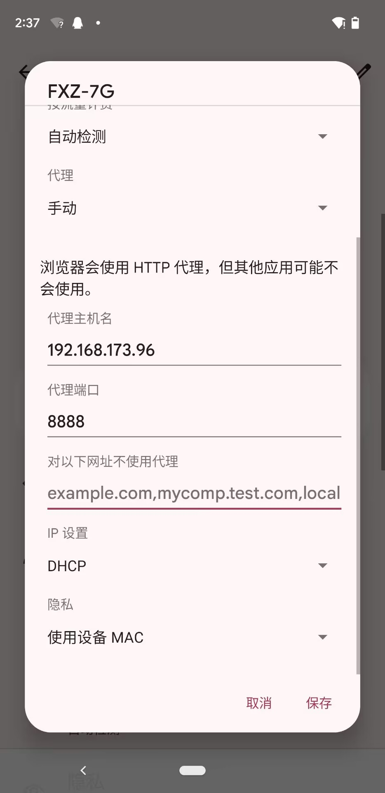
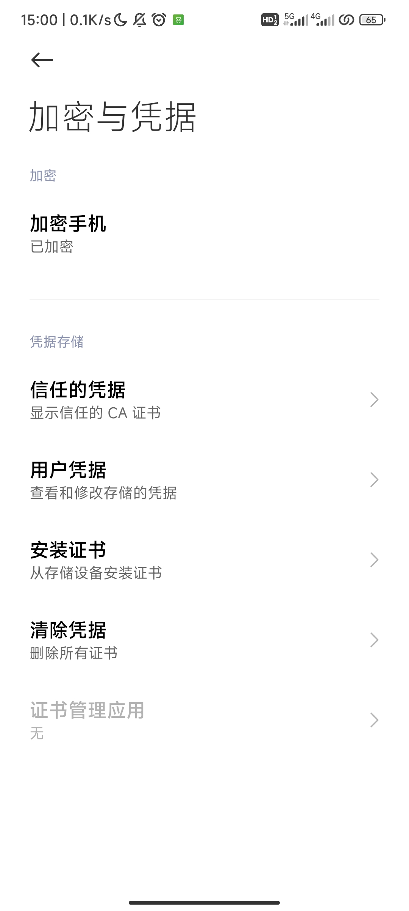
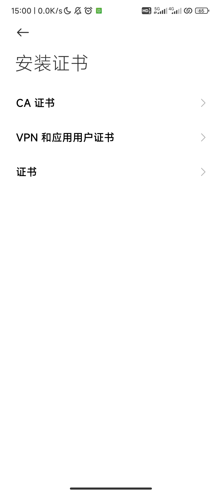

Charles代理抓包安装配置
参考文章https://blog.csdn.net/qq_45564088/article/details/121864553
PC端Charles安装配置
Charles安装激活
Charles下载地址https://www.charlesproxy.com/download/
安装后生成keygenhttps://ydq.github.io/charles-keygen/,在help选项卡中填写信息激活
安装本地证书


设置Proxy
注: 本地抓包可以开启Windows Proxy,若代理抓手机包建议关闭,否则会抓到PC本地包干扰分析
勾选上HTTP Proxy的两个选项框,默认代理端口8888,根据需求修改

设置SSL Proxying
勾选Enable SSL Proxying 在include中添加*:443(方便起见可以仅设置*:*)

移动端配置
代理设置
首先在help>Local IP Addresses查看Charles的IP地址

再到手机wifi的设置中手动设置代理(Charles代理端口默认8888)
设置代理后在PC端允许连接

安装证书
下载证书
首先需要下载Charles证书(默认.pem格式即可)
可以通过浏览器下载或本地保存再通过adb推送至手机

如果选择浏览器下载会弹出ip和端口,手机端浏览器访问即可下载

如果保存到本地,通过adb push certificate.pem /sdcard/Download
安装证书
搜索凭据,选择安装证书
安装CA证书
移动证书到系统目录
默认安装的证书为用户证书,可能导致被检测从而使得一些包抓不到
可以使用MoveCertificate模块,地址https://github.com/ys1231/MoveCertificate
使用Magisk/Apatch/KernelSU均可以安装该模块,安装模块后,安装的用户证书会自动移动到系统证书目录
经过以上操作就可以顺利抓包了,不过部分app可能存在SSL_Pining等检测反抓包,需要单独处理